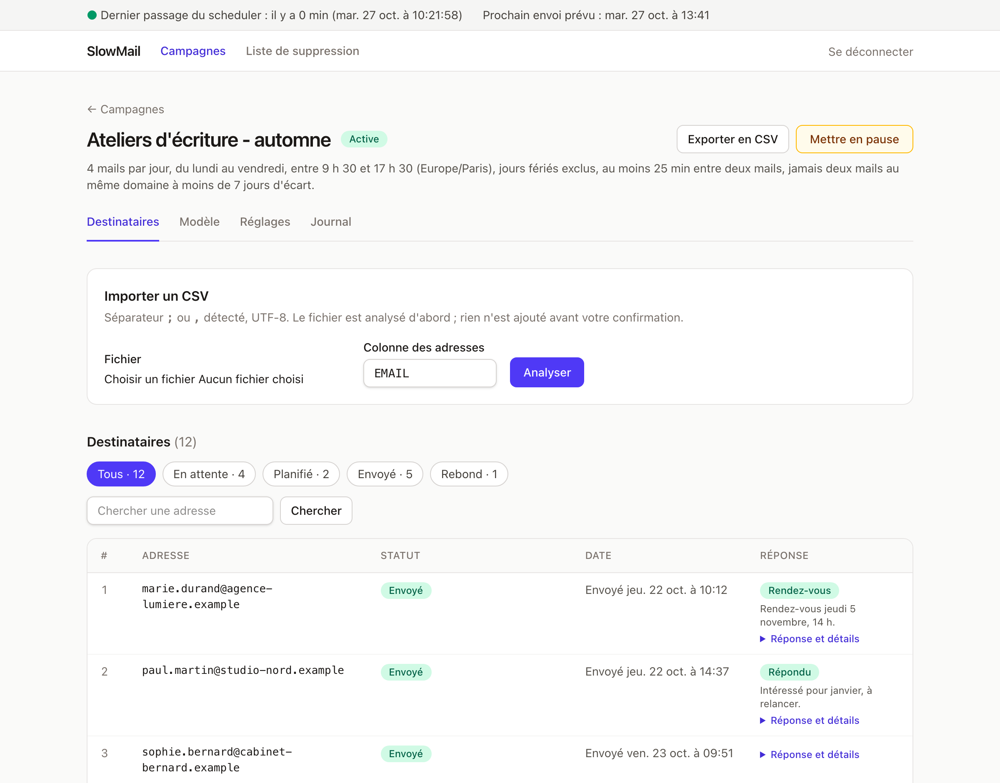
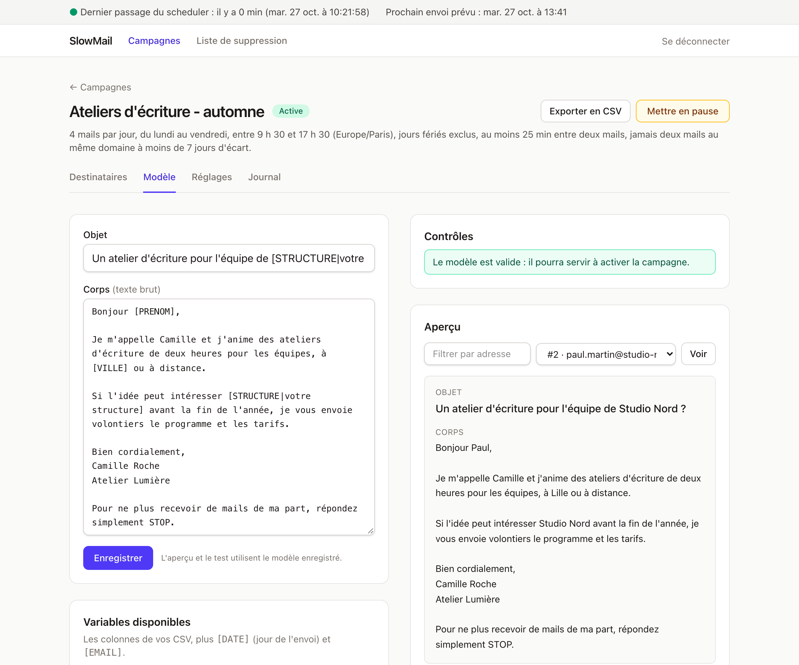
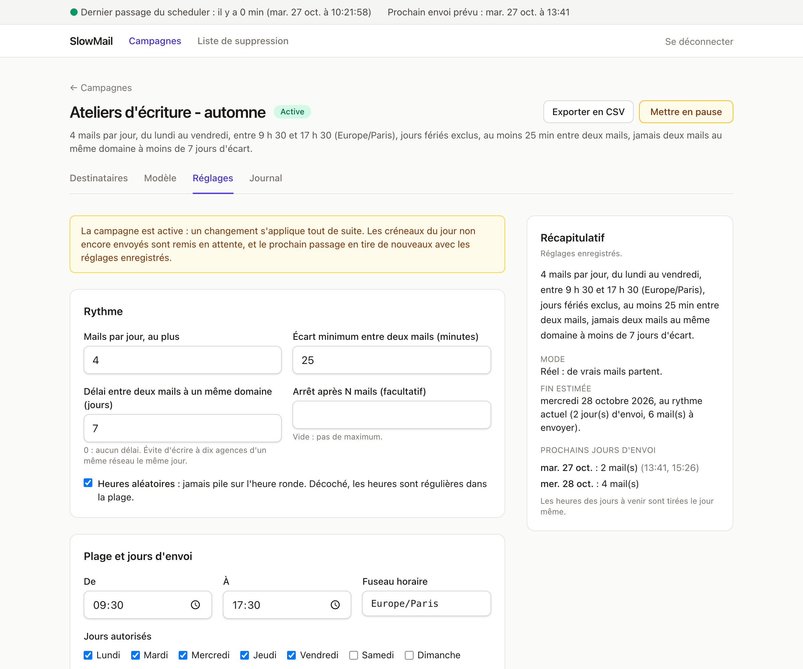
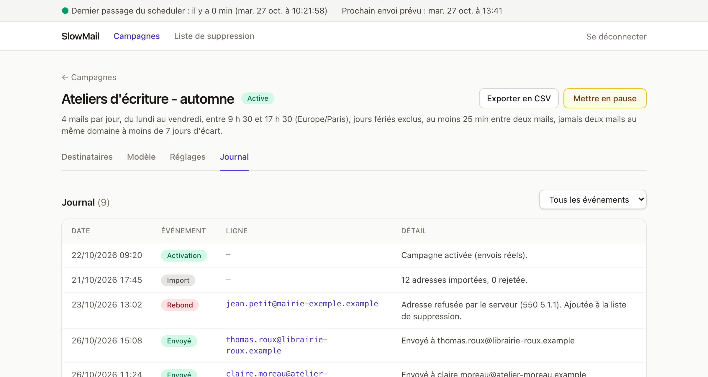

Prospectez au compte-gouttes, jamais en rafale.
SlowMail envoie quelques mails par jour, à des heures variables, depuis votre propre messagerie, à partir d'un fichier CSV et d'un modèle de texte. Gratuit, libre, et installé chez vous.
Pour Mac, Windows et Linux, avec Docker. Un tutoriel pas à pas explique tout, même si vous n'avez jamais utilisé Docker.

Pensé pour ne rien envoyer de trop
Un mail de prospection mal géré fait vite plus de mal que de bien. SlowMail applique des règles prudentes, et dans le doute, il ne fait rien.
Lent par conception
4 mails par jour par défaut, à des heures tirées au hasard dans votre plage (9 h 30 à 17 h 30, jours ouvrés, hors jours fériés français), avec un écart minimum entre deux envois. Une montée progressive est possible.
Prudent dans le doute
Une coupure en plein envoi, une erreur inconnue : SlowMail ne renvoie jamais tout seul. La ligne passe en « À vérifier » et c'est vous qui décidez. Après une veille de l'ordinateur, rien n'est rattrapé en rafale.
Des garde-fous
Pas d'activation sans mention de désinscription dans votre texte. Une liste de suppression qui agit tout de suite. Trois échecs de suite mettent la campagne en pause. Un interrupteur général coupe tout.
Chez vous, rien d'autre
Vos contacts restent sur votre ordinateur, dans une petite base SQLite. Pas de compte en ligne, pas de pixel de suivi, pas de statistiques d'ouverture. SlowMail ne parle qu'à votre serveur de messagerie.
Simple à relire
Texte brut, variables comme [PRENOM], aperçu pour chaque contact, mail de test, et un mode simulation pour répéter sans rien envoyer.
Libre et gratuit
Licence AGPL-3.0. Vous pouvez l'utiliser, le lire, le modifier. Vous ne payez que votre messagerie.
Comment ça marche
Quatre gestes, dans le navigateur. Les captures montrent des données fictives.
Importez votre liste
Déposez un fichier CSV avec une colonne d'adresses (et, si vous voulez, prénom, structure, ville…). SlowMail vérifie tout avant d'ajouter quoi que ce soit : adresses invalides, doublons, personnes déjà contactées, adresses de votre liste de suppression.
Écrivez votre modèle
Un objet et un texte brut avec des variables tirées de votre CSV. L'aperçu montre le mail exact que recevra chaque contact, et un bouton vous envoie un vrai mail de test.

Réglez le rythme
Nombre de mails par jour, plage horaire, jours autorisés, écart entre deux mails, délai avant de réécrire à la même organisation. Le récapitulatif en clair vous dit ce que SlowMail va faire et quand la campagne finira.

Suivez, répondez, décidez
Le journal raconte chaque événement. Quand quelqu'un répond, vous le notez d'un clic (Répondu, Rendez-vous, Stop). Un « Stop » retire l'adresse de toutes vos campagnes, immédiatement.

Ce qu'il vous faut
- Un ordinateur (Mac, Windows ou Linux), allumé aux heures d'envoi.
- Docker, gratuit. Le tutoriel vous guide pour l'installer.
- Une boîte mail avec accès SMTP (testé avec OVH ; les autres hébergeurs sont expliqués dans le tutoriel).
- Une liste de contacts en CSV, et 20 minutes.
Ce que SlowMail n'est pas
- Un outil de mailing de masse ou de newsletter.
- Un outil de suivi : aucune ouverture ni aucun clic n'est mesuré.
- Un éditeur de mails HTML : c'est du texte brut.
- Un service en ligne : chacun installe sa propre copie, pour lui seul.
- Un lecteur de votre boîte : c'est vous qui notez les réponses.
Prêt à essayer ?
Le tutoriel part de zéro : installer Docker, démarrer SlowMail, puis faire un premier essai sur vos propres adresses avant de toucher à une vraie liste.
Commencer le tutorielQuestions fréquentes
C'est vraiment gratuit ?
Oui. SlowMail est un logiciel libre (AGPL-3.0) : pas d'abonnement, pas de version payante. Vous payez seulement votre propre messagerie, si elle ne l'est pas déjà.
Pourquoi n'y a-t-il pas de service en ligne ?
Parce qu'un service partagé vous obligerait à confier vos listes de contacts et les identifiants de votre messagerie à un tiers. Ici, tout reste chez vous : SlowMail est conçu pour une seule personne, sur sa propre machine.
Mes contacts sont-ils envoyés quelque part ?
Non. Ils sont enregistrés dans une base SQLite, dans un espace Docker de votre ordinateur. SlowMail ne contacte que le serveur SMTP que vous lui indiquez, pour envoyer vos mails. Il n'y a ni télémétrie ni suivi.
Mon ordinateur doit-il rester allumé ?
Aux heures d'envoi, oui. S'il s'éteint ou se met en veille, rien ne part, et au réveil SlowMail ne rattrape rien en rafale : les créneaux manqués sont replanifiés dans votre plage horaire.
Puis-je m'en servir pour mon activité professionnelle ?
Oui, l'AGPL autorise l'usage professionnel. Si vous modifiez SlowMail et que vous proposez cette version à d'autres personnes par un réseau, la licence vous demande de leur donner aussi votre code modifié.
Est-ce légal de prospecter par mail ?
Cela dépend de qui vous écrivez et de comment vous les avez obtenus. La page Bon usage rappelle les bases pour la France et l'Union européenne. SlowMail aide, mais la responsabilité de vos envois reste la vôtre.